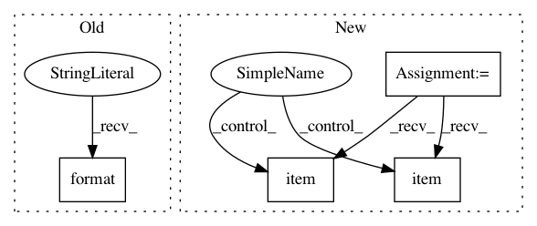

e09e6dc678f9b9c198ed361eea0dffa7749bc553,src/garage/torch/algos/vpg.py,VPG,train_once,#VPG#Any#Any#,130
Before Change
ids = shuffled_ids[start:start + step_size]
loss = self._train(obs_flat[ids], actions_flat[ids],
rewards_flat[ids], advantages_flat[ids])
logger.log("Mini epoch: {} | Loss: {}".format(epoch, loss))
self._value_function.fit(paths)
After Change
obs_flat = torch.cat(filter_valids(obs, valids))
actions_flat = torch.cat(filter_valids(actions, valids))
rewards_flat = torch.cat(filter_valids(rewards, valids))
returns_flat = torch.cat(filter_valids(returns, valids))
advs_flat = self._compute_advantage(rewards, valids, baselines)
with torch.no_grad():
policy_loss_before = self._compute_loss_with_adv(
obs_flat, actions_flat, rewards_flat, advs_flat)
vf_loss_before = self._value_function.compute_loss(
obs_flat, returns_flat)
kl_before = self._compute_kl_constraint(obs)
self._train(obs_flat, actions_flat, rewards_flat, returns_flat,
advs_flat)
with torch.no_grad():
policy_loss_after = self._compute_loss_with_adv(
obs_flat, actions_flat, rewards_flat, advs_flat)
vf_loss_after = self._value_function.compute_loss(
obs_flat, returns_flat)
kl_after = self._compute_kl_constraint(obs)
policy_entropy = self._compute_policy_entropy(obs)
with tabular.prefix(self.policy.name):
tabular.record("/LossBefore", policy_loss_before.item())
tabular.record("/LossAfter", policy_loss_after.item())
tabular.record("/dLoss",
(policy_loss_before - policy_loss_after).item())
tabular.record("/KLBefore", kl_before.item())
tabular.record("/KL", kl_after.item())
tabular.record("/Entropy", policy_entropy.mean().item())
with tabular.prefix(self._value_function.name):
tabular.record("/LossBefore", vf_loss_before.item())
tabular.record("/LossAfter", vf_loss_after.item())
tabular.record("/dLoss",
vf_loss_before.item() - vf_loss_after.item())
In pattern: SUPERPATTERN
Frequency: 3
Non-data size: 4
Instances
Project Name: rlworkgroup/garage
Commit Name: e09e6dc678f9b9c198ed361eea0dffa7749bc553
Time: 2020-05-01
Author: 43084978+yonghyuc@users.noreply.github.com
File Name: src/garage/torch/algos/vpg.py
Class Name: VPG
Method Name: train_once
Project Name: elbayadm/attn2d
Commit Name: d3795d6cd1c66ac05dc0f4861ce69ab4680bff3d
Time: 2018-04-02
Author: myleott@fb.com
File Name: fairseq/distributed_utils.py
Class Name:
Method Name: all_gather_list